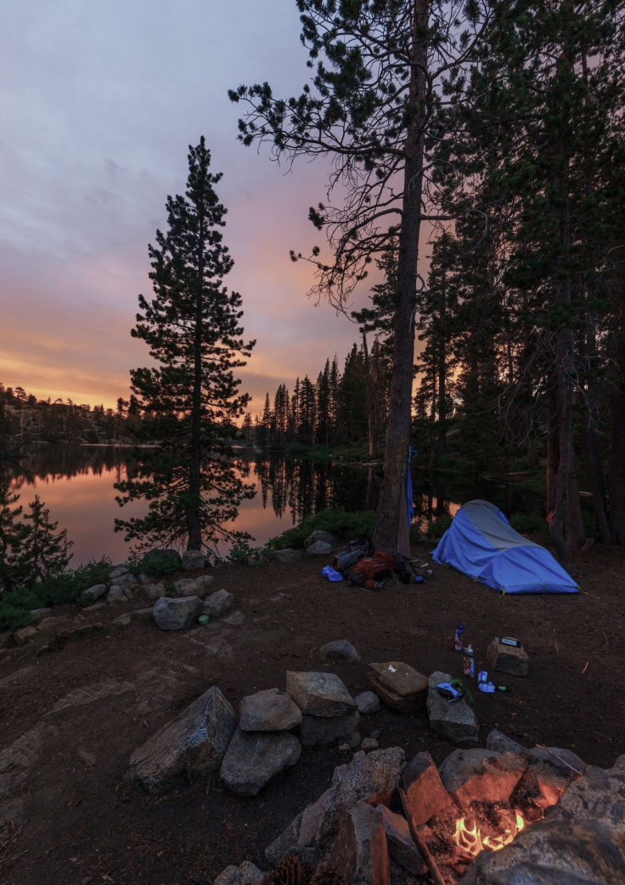
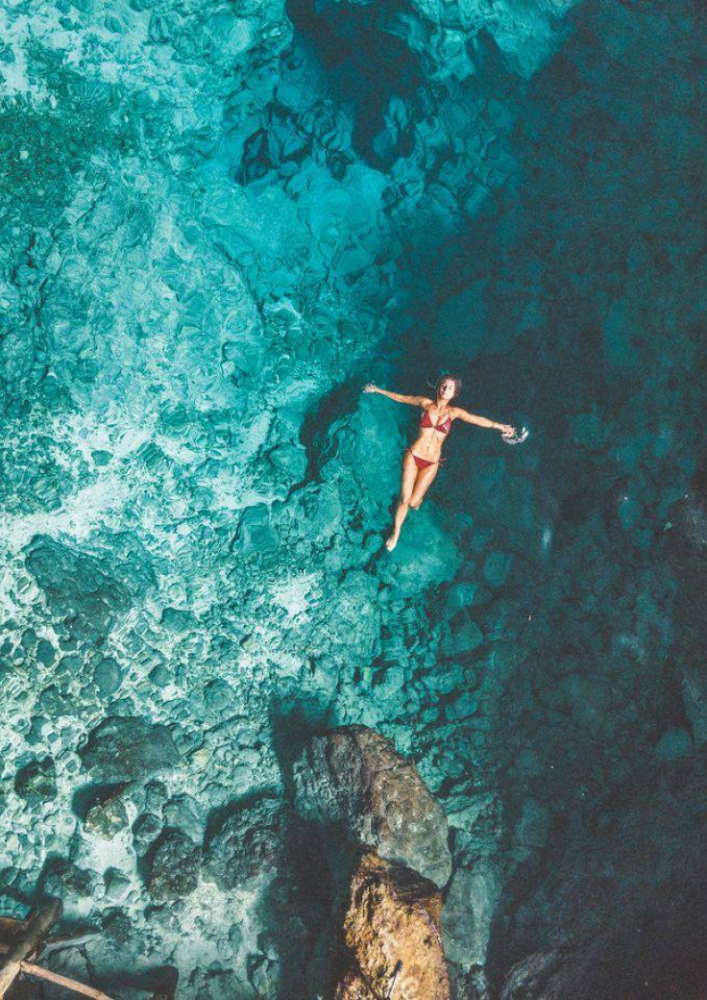
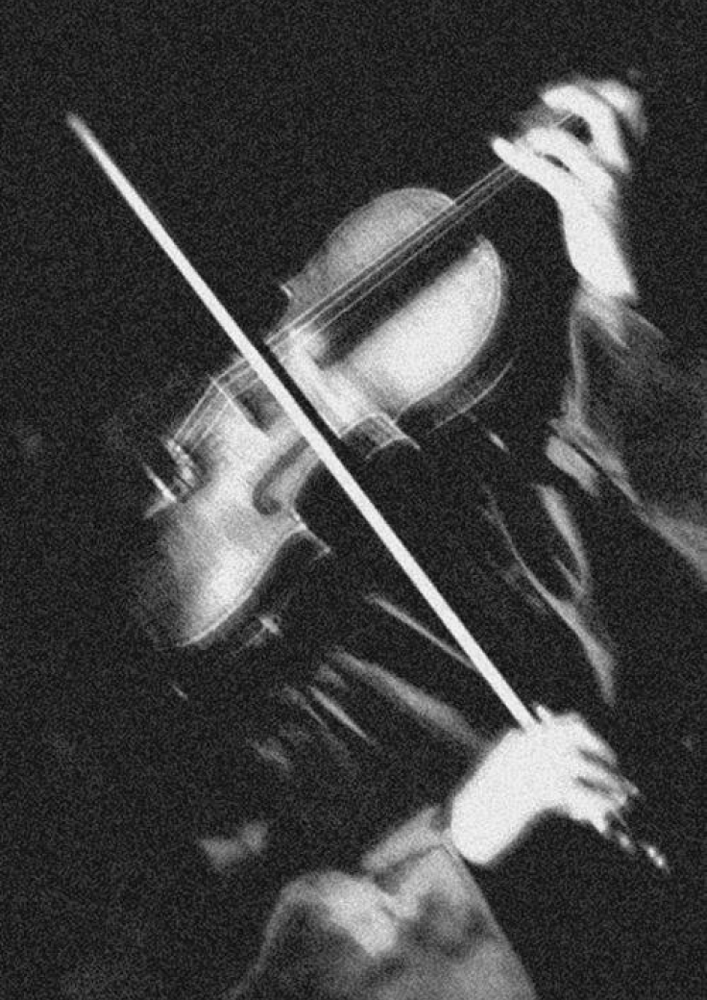
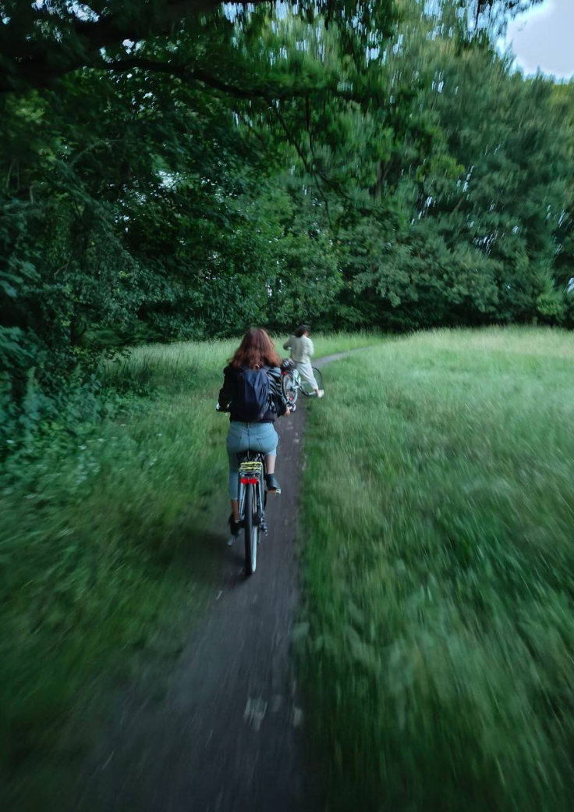

Hello, I'm a super-fun product designer living in Dessau, Germany.
Bahareh Bahrehbar
I’m a designer by design. I was born to make people’s lives easier and have an impact on users, business and my team.
My story
I'm an empathetic designer based in Dessau, Germany, with over five years of experience.
Meet Bahareh, the digital design dynamo who's always up for a challenge - whether it's crafting the perfect user interface or dominating (well, attempting to dominate) at board games. This self-proclaimed trash-talk champion might lose every match, but her competitive spirit never wavers, especially when it comes to foosball, ping pong, or a heated round of Mortal Kombat. When she's not pixelating perfection, you might find her scaling rock walls (or more likely, searching for the elevator), making a splash in the nearest pool, or planning her next budget-friendly adventure where she'll inevitably end up in a 12-person hostel room, surrounded by new friends from two days ago.Bahareh's journey from architect to digital design wizard is as colorful as her personality. She traded blueprints for pixels after falling head over heels for UI/UX design, realizing that learning new things daily was her true passion. Now, she's the go-to gal for transforming digital chaos into user-friendly magic at companies like Snapp and Qlub. When she's not revolutionizing ride-hailing apps or changing the game in restaurant payments, she's dreaming of reuniting with her furry friend Elsa, currently holding down the fort back in Iran.
My hobbies
Rather than design, I have other things to do in my life!
Anime
When she's not designing digital wonders, Bahareh is often found immersed in the world of anime, cheering on Naruto's determination or theorizing about the next twist in Attack on Titan.

Nature
With a long-term dream of exploring Europe's lush landscapes, Bahareh is slowly building her camping arsenal, eager to trade pixels for pinecones and UI flows for flowing rivers.
Books
Though her busy schedule doesn't allow for much reading, she still finds solace in the pages of philosophical novels, her "old fellas" that offer a perfect escape when she needs to recharge her creative batteries.

Swimming
Whether she's a Michael Phelps in the making or just staying afloat, Bahareh dives into swimming with enthusiasm, finding joy in the simple act of gliding through water.

Playing violin
At a time, she fancied herself a violinist, but after a brief musical journey, she gracefully bowed out, realizing her true talent lay in orchestrating user experiences rather than symphonies.

Cycling
As soon as she touched down in Germany, she pedaled her way into a new adventure, embracing biking not just as a mode of transport, but as a fun way to stay fit and explore.
Let's talk
Let's create a binge-worthy experience for your brand.